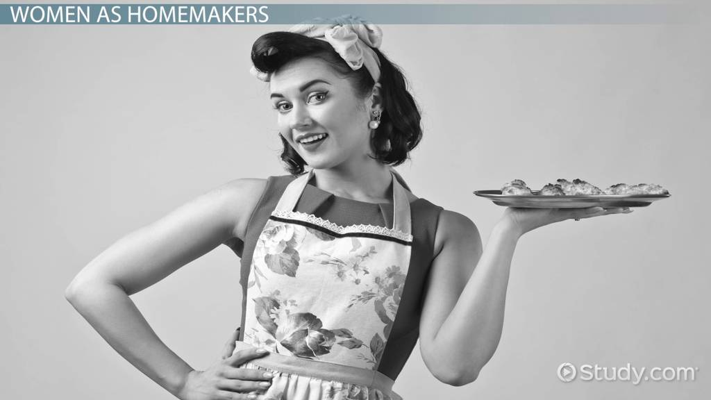

Now this is an interesting topic, how were women viewed in the 50s? Well in this post I will be solely talking about their roles in film and literature. In the modern day, women obtain lead roles in movies and have entire trilogies written about them.
A good example of this would be Star Wars. I know I know, nerdy thing but its true. In the original trilogy, almost all of the main starts were men, and only a few lead roles were filled with women, but after, we see the rise of Ray. In this “second
trilogy” we see the main role being taken up by a female and the supporting roles are played by men. Now of course this isn’t a perfect analogy, but it still shows how progress works. Now if we go back all the way to the 50s and look at films
from then, we see women had a very different role to play. Instead of having a main, or even side role, it seemed that women played a supporting role to the men. This is true in a lot of media back then, such as the popular TV show, Father Knows
Best and the very popular movie Rebel Without a Cause. In these films, the men take up the main role, as in the camera follows them around and they influence the story the most, while the women seem to have minimal effect on the plot. In Rebel
Without a Cause, the main actress simply follows the main character, Jim, around and helps him with turmoil and simply becomes a love interest to him. Now this rule isn’t always true, sometimes women to have a substantial role in film. In the
movie we just watched, Rear Window, we can see the women actually being somewhat of the main role, as the main actor has his leg broken and relies on them to help. In the first half, the women seem to just be helping him eat and what not (just
generally taking care of him), but towards the end we see them take up an active role in the plots progression and they become some the influences